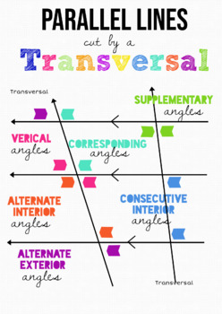

Notes consists of logic, Euclid’s 5th, Congruence and Length Theorem, Congruence and Angle Theorem, angles and parallel lines, and triangle congruence theorems.

1. Logic
Conditional Statement: \(P\rightarrow Q\)
Negation: \(\exists P\Rightarrow \neg Q\)
Inverse: \(\neg P\Rightarrow \neg Q\)
Contrapositve: \(\neg Q \Rightarrow \neg P\)
Converse: \(Q\Rightarrow P\)
Remember:
Inverse applies to the conditional statement.
Converse applies to the contrapositve.
Conditional statement and contrapositive are logically equivalent. Hence why we can prove things by way of contradiction.
Inverse and converse are logically equivalent
Negation is the only one where there could exist.
Example
Conditional Statement: If it is cloudy then it is raining.
Negation: It could be cloudy and not raining.
Inverse: If it is not cloudy then it is not raining.
Contrapositive: If it is not raining then it is not cloudy.
Converse. If it is rainy, then it is cloudy.
2. Euclids 5th
If a straight line falling on two straight lines makes the interior angles on the same side less than two right angles, the two straight lines, if produced indefinitely, meet on that side on which are the angles less than the two right angles.
This relates to parallel lines, and helps us make statements about lines transverse to parallel lines.
Example
When proving supplementary angles add to \(180^\circ\) we were able to use Euclids 5th element to say that the supplementary interior angles added up to \(\geq 180^\circ\) because the lines are parallel (and don’t intersect).
3. Congruence and Length Theorem
\(\overline{AB}=\overline{CD}\Leftrightarrow AB=CD\)
Proof Points
“Because \(\triangle ABC\cong \triangle DEF\) then there is an isometry f that superimposes angle ABC on angle DEF. Isometries preserve angle measure, so angles ABC and DEF must have had the same measure.”
“Suppose angles ABC and DEF have the same measure.” Then explain isometry needed to move angle ABC to angle DEF. “Translation, rotation, and reflection are all isometries, so we’ve shown angles ABC and DEF are congruent.”
4. Angles and Parallel Lines
Vertical Angles are Congruent (Proved Quiz 1)
Alternative Interior Angles are Congruent
Supplementary Angles add to 180
Corresponding Angles are Congruent
5. Triangle Congruence Theorems
- AAS, SSS, SAS, ASA
Remember
SSS is the most obvious and intuitive (it also wouldn’t be AAA).
ASA and SAS have one A or one S sandwiched in the middle.
AAS not ASS (bc you can’t say that in school).